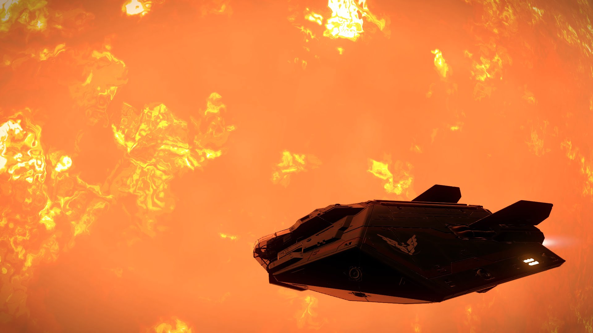

Jennifer looks at Engalo… “I am a wheeler” the expression on Engalo’s face turns from restless to unbelief. “What?” Engalo leans towards the stairs railing and let’s go of Jen’s hand. Jennifer looks down; “Well, I left them… Cyraios helped me make it look like my ship got blown up and then helped me hide for a while. You see they have been corrupted by power hungry people with personal agendas. Trading with drugs and old artefacts from distant worlds… even slaves. I joined them in belief they where that mysterious old and legendary star riders my mother told me about…. She was a wheeler to” Jennifer looks up at Engalo “There still is some good pilots, true star riders amongst them yet…“
Engalo turns and looks over at the mansion they left only moments ago. 7 drones can be seen in the distance closing in rapidly. “Well, we are to late to fight our way out now. The hangar probably crawls with drones and most likely people with guns” Engalo holsters his gun and sits down next to Jennifer. Jennifer stare at the drones getting closer and then back at Engalo. “I should have told you before, but you where just a job at first… I didn’t expect to run away with you. Although running away seems to be what I tend to do best” Drones descends down around them, surprisingly enough no guns drawn, and suddenly as out of nowhere Byron stands in front of them. “Before you draw your weapon Engalo. I have no intention to hurt any of you and you are free to go. But if I may ask a favour before you leave I would be most pleased” Engalo looks a little surprised at Byron “A favour?” Byron walks slowly back and forth with his hands on his back. “Well, yes. We need some more Hydrogen fuel, your ship is a little small but with 30 – 40 runs to the star here we would have enough to fully power every system on this station and the drives… then we could move the station to refuel it further” Byron stops placing a hand on Engalo’s shoulder. “You see this station was built by the most experienced Dark Wheel pilots, the wises and nobles of us. When a unity of people gets to big it will collapse in on itself. This was to be the ark to secure our secrets and our legacy! A heritage of what was… if you like” Byron smiles.
Engalo stands up. “Well, allright… I’ll do what you ask. 30 runs and then we will be on our way” Byron smacks his hands together. “Excellent! If I may Jennifer, I knew your mother and would like to show you something” Byron types something on a pad and gives it to Jennifer. Jennifer’s face drops. “Oh… My mother helped build this station?” Byron laughs “Not only build my friend, this is here design. During the first test jump, there where as something grabbed the station and flung it out here. Battered and bruised and since we only where to jump between two star systems we took minimum fuel. When we came here we didn’t have enough fuel to run all the systems on this station” Byron walks back and forth again. “We only had fuel for minimum life support, we had to improvise for food and grow whatever we could” Jennifer suddenly has a surprised look on her face. “I suddenly understand something… My moms last words where: I see the beacon, it’s still out there Jennifer… A dark wheel in the night“
Jennifer holds her breath for a while. “It was this place she was talking about, it makes perfect sense now… Byron show me everything about this place. I even remember old drawings my mom had when I was a little girl” Jennifer stands up smiling and excited. Engalo a little perplexed “So… we are all best friends now are we?” Jennifer walks over to Engalo. “Don’t you see, this is my mothers lost dream. I have to see it all Engalo!” Engalo looks in to Jennifer’s eyes. “Are you sure? I could start gathering hydrogen by myself. It’s straight forward easy, but are you sure…. do you trust him and this place?” Engalo looks over at Byron raising an eyebrow. Jennifer places both her hands on Engalo’s shoulders. “Yes… I have to… What he showed me on that pad is details only my mother could have known” Engalo takes a step back. “Right, I’ll start gathering this hydrogen then. Take this Jen, if someone here as much as looks at you funny. Press it and I’ll be back in a flash guns blazing… ok?!” Jennifer smiles. “Ok“

“30th run…” Engalo mutters. Jennifer had met Engalo on the launch pad every fifth run with images and drawings her mother had made. Jen even showed Engalo a place in the cafeteria where her mother and all seventeen of the designers had scratched in their names. The station had been completed only a year before Jennifer was born.
The fuelscoop closed as the Asp was fully loaded yet again with Hydrogen fuel for the station. Engalo vectored out and away from the star and turned towards the station coordinates. Engalo jumps out of normal space and docks with the station. Jennifer meets him on the launch pad. Jen smiles. “I have helped them stabilise the drives. Could you fly out and inspect them manually while we power them up?” Engalo smiles back at Jen. “Sure thing, no problem” Engalo undocks from the station again. About 250 people live on the station Byron told Engalo. Almost 50 of them born there. “They must be dying to see their homes again” Engalo says to himself. “In position, stand by for video link. Link established, fire up the drives Jen” A faint blue glow starts to appear around the engines, growing brighter and brighter. A humming noise could be heard and the Deptford Prize starts to shake a little. “Jen, I got some strange readings here… do you see it?” Jen’s voice crackles over the coms. “There is a anomaly in the drive readings, do you see anything Engalo? We lost the video feed, shutting down the engines” The Deptford Prize shakes violently and the hum is more of a roar now. Engalo fires the retro thrusters and stops about 2 clicks away from the station where the vibration and noise cant be heard. “Jen, can you hear me? Shut down the drives!” Jennifer’s voice cracks over the coms. “Engalo… drives…anomaly reading…cant shut down…En#alo, d# you Re#d me? ENG#LO!!!” A bright blue flash blinds Engalo and then; silence and darkness. After a few minutes of stumbling around the cockpit looking for that tube with healing gel, Engalo’s eyesight starts to get back to normal. Stumbling back to the commanders chair Engalo tries the coms. “Jen… do you read?” After several tries on the coms Engalos eyesight is almost back to normal and to his consternation the station is gone. Engalo activates the wake scanner and frantically looks for a wake to scan. He’s to late, the wake has evaporated to much to be scanned. Slowly sitting back in his commanders chair Engalo turns Deptford Prize around all directions in desperation trying to find the station. “It’s gone” Engalo whispers to himself… “She’s gone…“
[A second illustration ran here in the original post; the Wayback Machine only captured a broken image link for it, so it could not be recovered.]
After almost 2 and a half months, Engalo have given up the search for Jennifer and the lost station. His only hope to find Jen again, is to confront the Dark Wheel and find out everything possible about that mysterious station.
Engalo looks down on his console, and opens the navigation computer. “Not far now, a quick stop to have a serious chat with Cyraios and hopefully my conda has been fixed” He lines up for the last jump towards Cyraios’s base. 3… 2… 1… Engage.
As the swirls of hyperspace fly by, Engalo can’t shake the feeling that Jen would want it this way. She found her mothers lost project, her mothers dream, a place she belongs. He feels it in his heart that she is alive and safe. “I’ll see you again Jennifer… someday” The Deptford Prize jolts as it exits hyperspace and immediately a familiar voice crackles over the coms. “Greetings old friend! Long time no see, I have prepared a landing pad for you already, no need to submit a request when you get your rusty old Asp over here. You are already in the pattern. I got something bigger and more shiny waiting for you. Try not to dent it this time! Cyraios out”